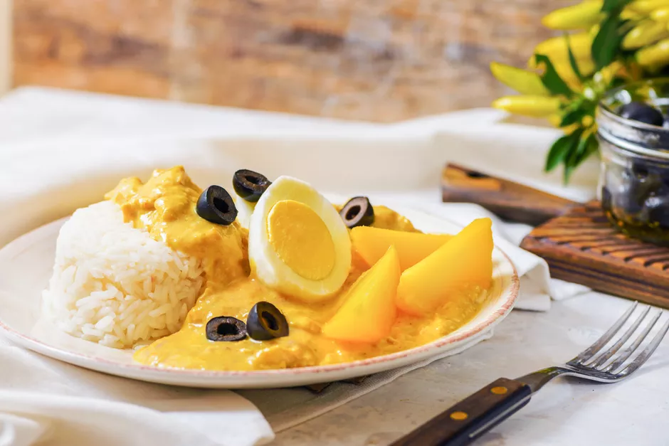

Aji de gallina

Ají de gallina is one of these traditional dishes: Poached chicken slathered in a spicy and creamy nut-based sauce is served over white rice and boiled potatoes. Bright yellow—amarillo—in color, thanks to the famous ají amarillo, and rich from the unusual sauce of ground walnuts, this dish is hearty, filling, and delicious. Don't be intimidated by how complex it sounds, the recipe is broken down into bite-sized pieces and is well worth the effort.
Ingredients
- 4 yellow potatoes
- 4 slices white bread
- 3/4 cup evaporated milk, plus 1 to 2 tablespoons more if needed
- 1 1/2 pounds chicken breast
- 4 cups chicken stock
- 3 to 4 yellow ají peppers
- 2 cloves garlic, minced
- 1 large onion, finely chopped
- 3 tablespoons coarsely chopped walnuts
- 3 tablespoons grated Parmesan cheese
- 3 cups cooked white rice
- 2 large hard-boiled eggs, quartered
- 10 black olives, pitted and halved
Steps
- Cook the yellow potatoes in salted water until tender when pierced with a fork.
- Let cool, peel, cut into quarters, and set aside.
- Place the bread in a small bowl and pour the 3/4 cup of evaporated milk over it to soak. Set aside.
- Place the chicken in a pot with the chicken stock and bring to a simmer.
- Cook for 10 to 15 minutes until chicken is just barely cooked through.
- Set chicken aside to cool, reserving the stock.
\
- Strain the stock and reserve 2 cups.
- Shred the cooled chicken into bite-sized pieces.
- Remove stems and seeds from the peppers.
- In a blender, process the peppers with vegetable oil. Blend until smooth.
- Add to a medium saucepan the vegetable oil and ají mixture. Add the garlic and onion to the pan and then cook until the onion is soft.
- Remove the mixture from the heat and let it cool.
- Add the soaked bread, walnuts, and Parmesan cheese to the blender and process until smooth. Add 1 to 2 tablespoons evaporated milk, or even some of the strained chicken stock, if the mixture is not smooth.
- Add the cooked onion mixture into the blender and process briefly until well combined.
- Place the yellow mixture into a pan and add 1 1/2 cups of the reserved chicken stock. Stir together until combined.
- Bring the sauce to a low simmer. Add in the chicken and heat until warmed through, adding more chicken stock if the sauce is too thick.
- One portion of chicken goes over 1/2 cup of cooked white rice, garnished with a few quarters of yellow potatoes, a couple of quartered hard-boiled eggs, and black olives. Enjoy.